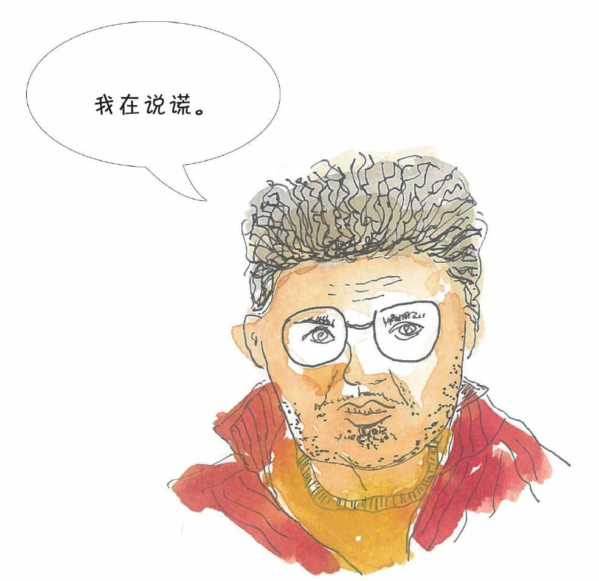

小文，你要是听到有人这样夸口：“我这个人啊，朋友值千金，视黄金如粪土。”你会怎么想？你会觉得这个人很豪爽吗？
据说逻辑学家金岳霖十几岁时就发现这句话有逻辑问题，他发现这两句话可以推导出：朋友是粪土！
看来，我们即使当不上福尔摩斯和柯南那样的推理高手，还是有必要了解一些推理的基本常识，免得说出类似“朋友是粪土”的话来。
逻辑研究的中心问题是推理，而推理所需要的前提和得出的结论都是命题。
什么是命题呢？所谓命题就是能判断真假的陈述句。
比如“2018年世界杯举办国是俄罗斯”，“所有人都是要死的”以及“苏格拉底是人”都是真值为“真”的真命题。
类似于“你有铅笔吗？”“这只兔子跑得真快呀！”“请不要讲话！”是不能作为推理的“食材”的，因为这三句话分别是疑问句、感叹句、祈使句，它们都不是命题。
再看这句话：我正在说谎——这是命题吗？
如果“我正在说谎”是一个真命题，则表示“我正在说谎”是一句真话，这就和命题本身的含义相矛盾。
如果“我正在说谎”是一个假命题，则表示“我正在说谎”是一句假话，即“我正在讲真话”，而这又和“我正在说谎”相矛盾。

这样看来“我正在说谎”无论是真是假，都会带来矛盾，因此，我们说这句话是一个悖论。
小文，从前面的理发师悖论，你是不是已经体会到了悖论带来的麻烦。
悖论的英文paradox一词，来自希腊语，意思是未预料到的、奇怪的。
“我正在说谎”源于一个著名的说谎者悖论，这个悖论在不同的时候曾有不同的表示形式，一个比较有代表性的表述是这样的：
古希腊克里特先知伊壁孟尼德（Epimenides）曾经说过：“所有的克里特人都是说谎者。”伊壁孟尼德说的这句话是真话吗？
“说谎者悖论”还可以是下面的形式：
有一张扑克牌，它的一面印有这样一句话：“牌的背面是真话。”但是在这张牌的背面也印有：“牌的背面是假话。”你该怎样看这张牌呢？
悖论长久以来让数学家着迷，并引发数学的多次变革。
公元前5世纪古希腊哲学家芝诺（Zeno）因为提出了一系列的悖论而出名，其中比较有名的悖论有“擅跑的阿基里斯跑不过乌龟”“飞矢不动”等。
一批以芝诺为代表的人认为悖论在本质上揭露了逻辑思维的欺骗性，而亚里士多德则不以为然，他认为悖论是不合逻辑的，只是一些华而不实的推理练习而已。
数学家一直想干这样一件事，为数学建立一个免于逻辑循环的坚实基础，但悖论始终是实现这一蓝图的绊脚石。
由于悖论带来问题至今难解，所以数学家们制定了如下“军规”以绕开这个绊脚石：悖论不是命题。